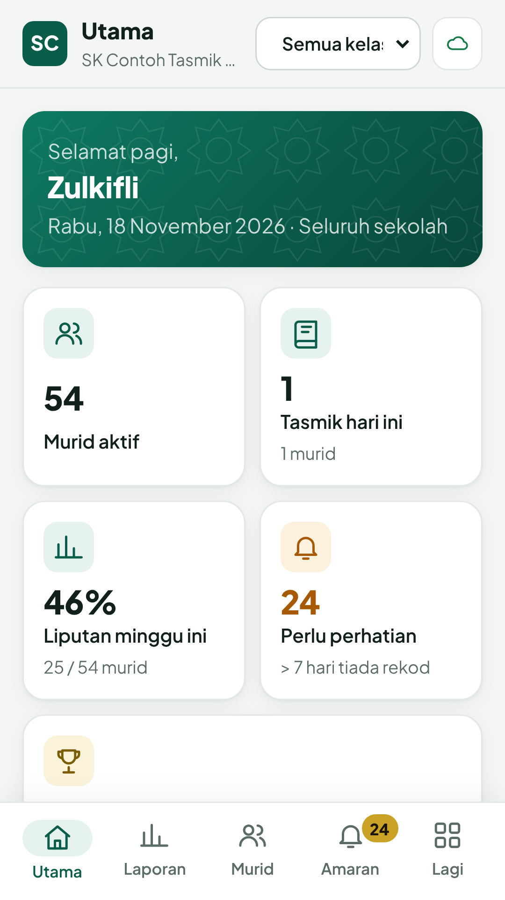
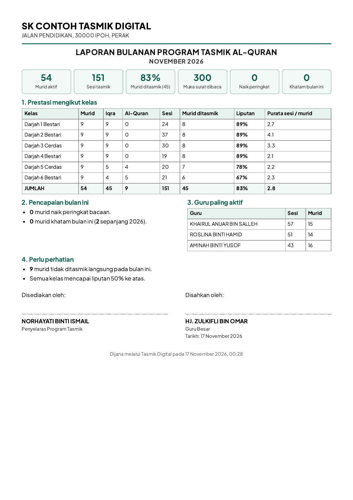
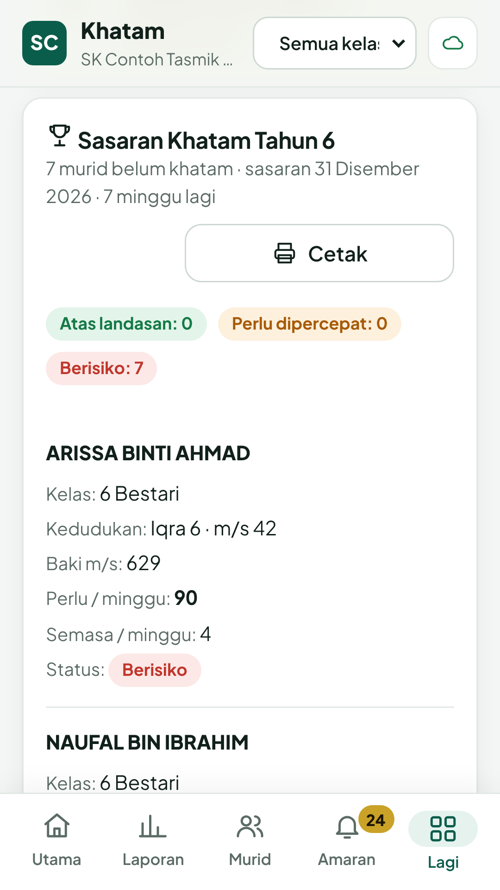
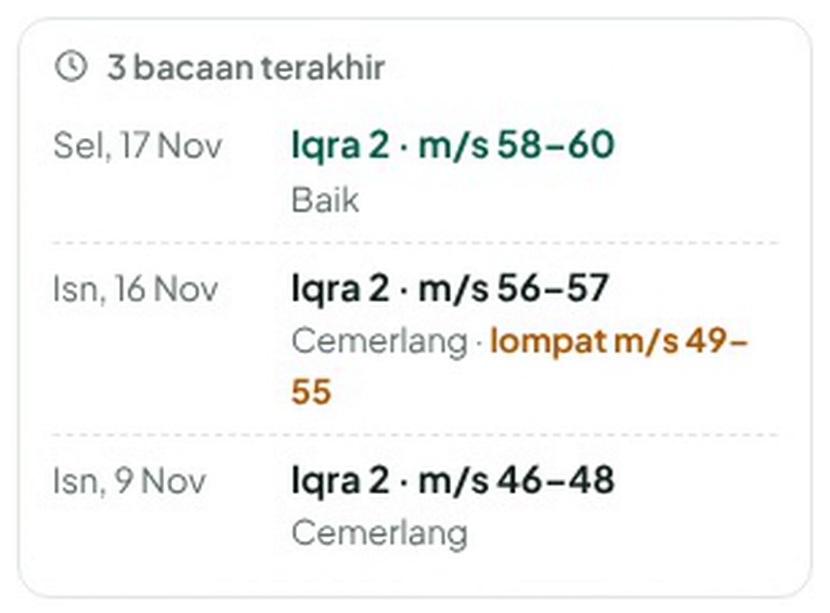

Rekod tasmik Al-Quran & Iqra
terus dari telefon guru
Pembentangan untuk pentadbir sekolah



Data disimpan dalam Google Sheet akaun sekolah sendiri
Salinan automatik setiap Ahad, 8 salinan terakhir
Guru, Penyelaras, Guru Besar — setiap guru nampak kelasnya
Rekod disimpan dahulu, dihantar bila talian ada
Bayaran pakej
Kemas kini aplikasi & data, tukar tahun, sokongan teknikal
Versi baharu, ciri baharu & pembaikan
Naik kelas murid & persediaan tahun baharu
Import murid baharu, pindah kelas & guru
Pulih dari sandaran, reset kata laluan guru
Terima kasih. Soal jawab.
